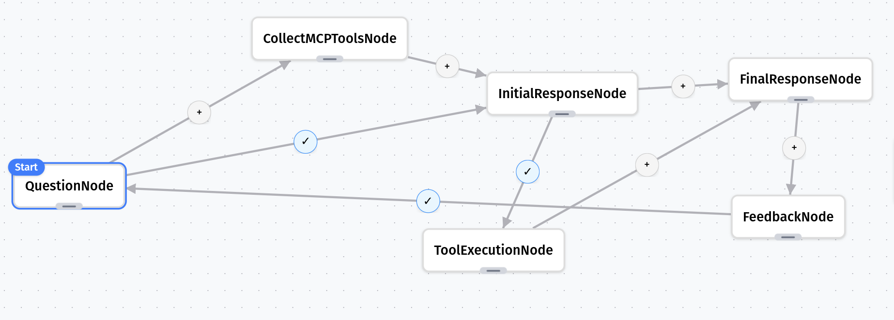

Tool-Calling with MCP
The Problem
Modern AI applications need to interact with external tools to solve complex problems. Whether it’s performing calculations, accessing databases, or calling APIs, we need a standardized way for LLMs to discover and use these tools.
Solution with Grapheteria
Grapheteria makes building tool-using workflows simple with MCP (Model Context Protocol). Here’s what we’ll build:
- User Input: A user asks a question requiring external tools
- MCP Connection: System connects to a tool server
- LLM Planning: Claude decides which tools to use
- Tool Execution: System executes the selected tool via MCP
- Response Synthesis: Claude interprets tool results and answers the question
First, let’s create our MCP server with powerful tools
Let’s set up an MCP server with a few example tools. While these demonstrations are straightforward, you can implement tools with any level of complexity your application requires:
# mcp_server.py
from fastmcp import FastMCP
# Create a named server
mcp = FastMCP("Claude Tool Server")
@mcp.tool()
def calculate(expression: str) -> float:
"""Evaluate a mathematical expression safely"""
# In a real application, use a safer evaluation method
return eval(expression, {"__builtins__": {}}, {"abs": abs, "round": round, "max": max, "min": min})
@mcp.tool()
def get_country_info(country: str) -> dict:
"""Get basic information about a country"""
countries = {
"france": {"capital": "Paris", "population": "67 million", "language": "French"},
"japan": {"capital": "Tokyo", "population": "126 million", "language": "Japanese"},
"brazil": {"capital": "Brasília", "population": "213 million", "language": "Portuguese"},
}
return countries.get(country.lower(), {"error": "Country not found"})
@mcp.tool()
def convert_units(value: float, from_unit: str, to_unit: str) -> float:
"""Convert between common units"""
conversions = {
"km_to_miles": 0.621371,
"miles_to_km": 1.60934,
"kg_to_lb": 2.20462,
"lb_to_kg": 0.453592,
"celsius_to_fahrenheit": lambda x: x * 9/5 + 32,
"fahrenheit_to_celsius": lambda x: (x - 32) * 5/9,
}
key = f"{from_unit.lower()}_to_{to_unit.lower()}"
if key in conversions:
converter = conversions[key]
if callable(converter):
return converter(value)
return value * converter
return {"error": "Conversion not supported"}
# Start the server
if __name__ == "__main__":
mcp.run()
Let’s create our utility functions
# utils.py
from functools import lru_cache
from typing import Dict, Any, List
from anthropic import Anthropic
from dotenv import load_dotenv
import os
load_dotenv() # load environment variables from .env
@lru_cache(maxsize=1)
def get_llm_client():
return Anthropic(api_key=os.environ.get("ANTHROPIC_API_KEY"))
def call_llm(messages: List[Dict[str, Any]], tools: List[Dict[str, Any]]) -> str:
llm_client = get_llm_client()
response = llm_client.messages.create(
model="claude-3-5-sonnet-20241022",
max_tokens=1000,
messages=messages,
tools=tools
)
return response
Now, let’s define our workflow nodes
# nodes.py
import asyncio
from mcp import ClientSession, StdioServerParameters, stdio_client
from utils import call_llm
from grapheteria import Node
class QuestionNode(Node):
async def prepare(self, shared, request_input):
question = await request_input(
prompt="What would you like to know?",
input_type="text"
)
shared["question"] = question
shared["messages"] = shared.get("messages", [])
shared["messages"].append({
"role": "user",
"content": question
})
class CollectMCPToolsNode(Node):
async def prepare(self, shared, _):
server_params = StdioServerParameters(
command="python",
args=["examples/mcp_tool_calling/mcp_server.py"],
)
async with stdio_client(server_params) as (read, write):
async with ClientSession(read, write) as session:
# Initialize the connection
await session.initialize()
# Get tools
response = await session.list_tools()
shared["tools"] = [{
"name": tool.name,
"description": tool.description,
"input_schema": tool.inputSchema
} for tool in response.tools]
shared["collected_tools"] = True
class InitialResponseNode(Node):
def prepare(self, shared, request_input):
tools = shared["tools"]
messages = shared["messages"]
return tools, messages
def execute(self, prep_result):
tools, messages = prep_result
response = call_llm(messages, tools)
return response
def cleanup(self, shared, prep_result, exec_result):
tool_calls = []
for content in exec_result.content:
if content.type == 'tool_use':
tool_call = {
"id": content.id,
"name": content.name,
"input": content.input
}
tool_calls.append(tool_call)
shared["tool_calls"] = tool_calls
messages = shared["messages"]
messages.append({
"role": "assistant",
"content": exec_result.content
})
shared["messages"] = messages
#Parallel Tool Execution
class ToolExecutionNode(Node):
def prepare(self, shared, request_input):
tool_calls = shared["tool_calls"]
return tool_calls
async def _execute_with_retry(self, items):
# Process all items in parallel
tasks = [self._process_item(item) for item in items]
results = await asyncio.gather(*tasks, return_exceptions=True)
# Check for exceptions
for result in results:
if isinstance(result, Exception):
raise result
return results
async def execute(self, prep_result):
tool_id, tool_name, tool_input = prep_result['id'], prep_result['name'], prep_result['input']
server_params = StdioServerParameters(
command="python",
args=["examples/mcp_tool_calling/mcp_server.py"],
)
async with stdio_client(server_params) as (read, write):
async with ClientSession(read, write) as session:
# Initialize the connection
await session.initialize()
# Execute the tool
result = await session.call_tool(tool_name, tool_input)
return {
"tool_use_id": tool_id,
"result": result.content
}
def cleanup(self, shared, prep_result, exec_result):
for result in exec_result:
shared["messages"].append({
"role": "user",
"content": [
{
"type": "tool_result",
"tool_use_id": result["tool_use_id"],
"content": result["result"]
}
]
})
class FinalResponseNode(Node):
def prepare(self, shared, request_input):
messages = shared["messages"]
tools = shared["tools"]
return messages, tools
def execute(self, prep_result):
messages, tools = prep_result
# Get final response from Claude
response = call_llm(messages, tools)
return response.content[0].text
def cleanup(self, shared, prep_result, exec_result):
shared["final_response"] = exec_result
class FeedbackNode(Node):
async def prepare(self, shared, request_input):
global _mcp_client
print("\n🔍 Response:\n")
print(f"Question: {shared['question']}")
print("\nAnswer:")
print(shared['final_response'])
feedback = await request_input(
prompt="Was this answer helpful?",
options=["yes", "no"],
input_type="select"
)
shared["feedback"] = feedback
Finally, let’s define and run our workflow
# main.py
from nodes import *
from grapheteria import WorkflowEngine
import asyncio
# Create nodes
question = QuestionNode(id="question")
collect_mcp_tools = CollectMCPToolsNode(id="collect_mcp_tools")
initial_response = InitialResponseNode(id="initial_response")
tool_execution = ToolExecutionNode(id="tool_execution")
final_response = FinalResponseNode(id="final_response")
feedback = FeedbackNode(id="feedback")
# Connect nodes to form workflow
question > collect_mcp_tools > initial_response > final_response
question - "shared.get('collected_tools', False) == True" > initial_response
initial_response - "shared.get('tool_calls', False)" > tool_execution > final_response
final_response > feedback
feedback - "shared['feedback'] == 'no'" > question
# Create the workflow engine
workflow = WorkflowEngine(
workflow_id="mcp_tool_calling",
nodes=[question, collect_mcp_tools, initial_response, tool_execution, final_response, feedback],
start=question
)
async def run_workflow():
user_input = None
while True:
continue_workflow = await workflow.run(user_input)
# If workflow is waiting for input
if workflow.execution_state.awaiting_input:
request = workflow.execution_state.awaiting_input
request_id = request['request_id']
prompt = request['prompt']
print(f"\n[Input required] {prompt}")
if request['input_type'] == 'select':
for i, option in enumerate(request['options']):
print(f"{i+1}. {option}")
choice = input("Enter your choice (number): ")
user_input = request['options'][int(choice)-1]
else:
user_input = input("Your response: ")
await workflow.step({request_id: user_input})
elif not continue_workflow:
break
if __name__ == "__main__":
print("🧠 Claude Research Assistant with MCP Tools")
print("------------------------------------------")
print("Ask me anything! I can use tools to help you.")
# Run the workflow
asyncio.run(run_workflow())
Workflow JSON Schema
{
"start": "question",
"nodes": [
{ "id": "question", "class": "QuestionNode" },
{ "id": "collect_mcp_tools", "class": "CollectMCPToolsNode" },
{ "id": "initial_response", "class": "InitialResponseNode" },
{ "id": "tool_execution", "class": "ToolExecutionNode" },
{ "id": "final_response", "class": "FinalResponseNode" },
{ "id": "feedback", "class": "FeedbackNode" }
],
"edges": [
{ "from": "question", "to": "collect_mcp_tools" },
{ "from": "collect_mcp_tools", "to": "initial_response" },
{ "from": "question", "to": "initial_response", "condition": "shared.get('collected_tools', False) == True" },
{ "from": "initial_response", "to": "final_response" },
{ "from": "initial_response", "to": "tool_execution", "condition": "shared.get('tool_calls', False)" },
{ "from": "tool_execution", "to": "final_response" },
{ "from": "final_response", "to": "feedback" },
{ "from": "feedback", "to": "question", "condition": "shared['feedback'] == 'no'" }
]
}
Setup
# Install dependencies
pip install grapheteria fastmcp anthropic mcp python-dotenv
# Set your Anthropic API key in the .env file
echo "ANTHROPIC_API_KEY=your-api-key-here" > .env
# Run the workflow
python main.py
Key Features Demonstrated
- Granular Steps - Each part of the process has its own dedicated node
- MCP Protocol - Standard protocol for model-tool interaction
- State Propagation - Tool results and conversation history flow through shared state
- Visual Workflow - Entire tool-use cycle visualized in the Grapheteria UI
- Claude Integration - Direct access to Claude’s powerful tool-use capabilities
As always, run grapheteria in your terminal to launch the UI and visualize/run/debug this workflow.

The entire code for this example, along with deployment instructions, is available here. This pattern gives you maximum visibility into each stage of the tool-use process, making it perfect for debugging or adding custom logic at any point in the workflow!